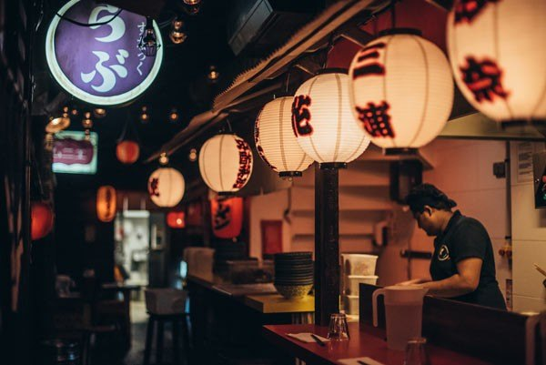
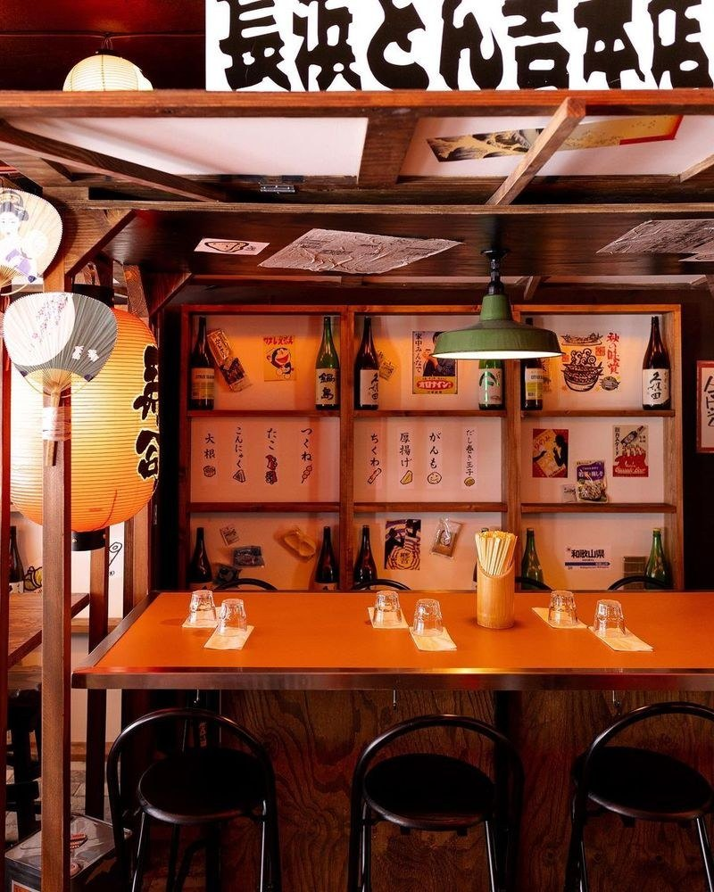
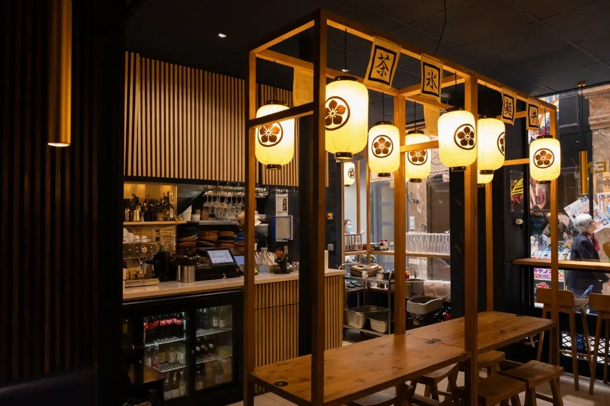

Meilleur ramen à Paris : 8 adresses en 2026
Un seul Bib Gourmand, un écart de prix du simple au double, et un bouillon de daurade que tout le monde attribue à la mauvaise adresse.

Le ramen parisien a changé de nature en cinq ans : il ne s'agit plus d'importer un plat mais de choisir une école. Voici huit adresses, avec pour chacune le style de bouillon, l'adresse exacte, les jours de fermeture et, quand la maison les publie, les prix relevés à la source.
L'essentielLe ramen à Paris en 2026
- Un seul Bib Gourmand dans cette sélection : Kodawari Ramen Yokochō, rue Mazarine, distingué au Guide Michelin 2026.
- Le ramen de daurade n'est pas rue Mazarine mais chez Kodawari Tsukiji, rue de Richelieu. Les deux maisons sont régulièrement confondues.
- Le ramen à moins de 10 € n'existe plus : de 13 € chez Isshin à 21 € chez Toy.
- Une rue, trois bouillons : rue Chérubini, Toritori fait le poulet, Tonton le porc, Gyogyo le poisson.
Comprendre une carte de ramen
Deux mots reviennent partout et désignent des choses différentes. Le tonkotsu et le paitan décrivent la base du bouillon : des os bouillis assez longtemps pour que le collagène émulsionne et rende le liquide opaque, du porc pour le premier, de la volaille pour le second. Le shio et le shoyu décrivent l'assaisonnement ajouté ensuite, sel ou sauce soja. Un tonkotsu shio et un paitan shoyu sont donc parfaitement possibles, et c'est ce qui explique des cartes en apparence répétitives.
Le reste tient à la nouille : fine et droite dans l'école de Kyushu, plus épaisse et ondulée ailleurs, faite maison dans quatre des huit adresses de cette page. C'est le critère le plus fiable pour distinguer une maison sérieuse d'une autre.
Ce que nous avons vérifié
Nous avons repris chaque adresse, chaque jour de fermeture et chaque prix aux sites officiels des maisons, ou au Guide Michelin pour les distinctions. Quatre des huit adresses n'ont pas de site officiel : nous ne leur prêtons aucun tarif, et nous l'écrivons.
Deux corrections méritent d'être signalées d'emblée, parce qu'elles circulent partout. Le bouillon de daurade royale est régulièrement attribué à Kodawari Yokochō, rue Mazarine : c'est la signature de Kodawari Tsukiji, une autre maison du même groupe, rue de Richelieu. Et le prix d'un ramen chez Toy est annoncé un tiers trop bas dans plusieurs sélections. Le reste relève des critères de notre grille.
Les 8 adresses
-
01
Kodawari Ramen Yokochō
Paris 6e · Ruelle de Tokyo reconstituée
Bib Gourmand 2026
La salle de Kodawari Yokochō, rue Mazarine. Photo Kodawari Ramen. C'est la seule adresse de cette page à porter une distinction du Guide Michelin : Bib Gourmand dans l'édition 2026. Le décor reconstitue une ruelle de Tokyo, lanternes de papier, fausses devantures, bande-son de rue, et il est tellement bien fait qu'on oublie d'être gêné.
La maison ne se contente pas du décor. Les bouillons, shio clair ou shoyu plus épais, sont montés sur volaille fermière et sauce soja artisanale Shibanuma. Le blé des nouilles est cultivé et moulu par la maison, qui les façonne à la main. La spécialité est le kurogoma ramen, sésame noir et porc pata negra.
Une confusion à lever, parce qu'elle est partout : le bouillon de daurade n'est pas servi ici. C'est la signature de Kodawari Tsukiji, la deuxième adresse du groupe, 12 rue de Richelieu dans le 1er, qui reconstitue le marché aux poissons de Tokyo et ne sert que des ramen de poisson, daurade sauvage de Normandie, sardines et baudroie de Concarneau. Une troisième maison, Kodawari Ueno, travaille le canard.
Pour qui ? Ceux qui viennent pour l'expérience autant que pour le bol. Ouvert tous les jours de 11 h 45 à 23 h, sans réservation : la file d'attente fait partie du programme, venez avant 19 h.
- Adresse29 rue Mazarine, 75006 Paris
- Ouverturetous les jours, 11 h 45 à 23 h
- Réservationaucune, premier arrivé premier servi
- Repère de cartekamo shoyu ramen à 16,90 € relevé en juillet 2026
-
02
Isshin Ramen
Paris 2e · Tonkotsu de Kyushu
Chef Shu Hasegawa
La salle d'Isshin Ramen, rue Montmartre. Photo Isshin Ramen. L'enseigne annonce la couleur en japonais au-dessus du comptoir : tonkotsu de Nagahama, c'est-à-dire l'école de Fukuoka, dans le Kyushu. Bouillon d'os de porc longuement tiré, nouilles fines et droites plutôt qu'ondulées, service au comptoir. C'est un style précis, pas un tonkotsu générique.
En cuisine, Shu Hasegawa, passé par le Bar des Prés de Cyril Lignac. La carte propose aussi des versions au poulet halal et une option végétarienne, ce qui reste rare dans le genre.
Les ramen sont affichés entre 13 et 18 €. La salle est petite et il faut souvent attendre. Attention au calendrier, que les listes oublient : la maison ferme le mercredi, et sert en continu le samedi et le dimanche.
Pour qui ? Ceux qui veulent un tonkotsu identifié plutôt qu'un bouillon de compromis. Métro Grands Boulevards.
- Adresse168 rue Montmartre, 75002 Paris
- Ouverture12 h à 14 h 30 et 19 h à 23 h en semaine ; service continu 12 h à 23 h le week-end ; fermé le mercredi
- Prixramen de 13 à 18 €
- Bon à savoiroptions poulet halal et végétarienne à la carte
-
03
Toritori
Paris 2e · Paitan de poulet
Trois maisons dans la même rueRue Chérubini, Makoto Saegusa a fait le contraire de tout le monde : au lieu d'une carte longue, trois adresses spécialisées à quelques mètres l'une de l'autre. Toritori, au numéro 2, ne fait que du paitan de poulet, une émulsion blanche obtenue en faisant bouillir longuement des carcasses jusqu'à ce que le collagène rende le bouillon crémeux, finie au sel, au shoyu ou au miso blanc.
Au numéro 4, Tonton fait le tonkotsu, donc le porc. Au numéro 1, Gyogyo travaille le poisson. Les trois appartiennent au même groupe, Kintaro. On peut donc comparer trois écoles de bouillon dans la même rue, ce qui n'existe nulle part ailleurs à Paris.
Le paitan de volaille est moins puissant que le porc et plus long en bouche ; les puristes du tonkotsu le trouveront délicat, c'est le principe.
Pour qui ? Ceux qui veulent une alternative au porc, et ceux qui aiment comparer. La maison ne publie pas de carte en ligne.
- Adresse2 rue Chérubini, 75002 Paris
- À côtéTonton au 4, tonkotsu ; Gyogyo au 1, bouillon de poisson
- Cartenon publiée en ligne
- Bon à savoirpas de site officiel, ni de réservation en ligne
-
04
Yatai Ramen
Paris 2e · Nouilles maison, cinq adresses
Nouilles façonnées sur place
La salle de Yatai Ramen, passage Choiseul. Photo Yatai Ramen. Sous la verrière du passage Choiseul, cette adresse a l'avantage rare d'être à la fois centrale et calme. Les nouilles sont faites sur place, bio, et le bouillon est monté à partir de produits frais ; la maison en fait son argument principal, et c'est vérifiable dans le bol.
Le réseau compte cinq adresses à Paris, et non trois comme on le lit : Pyramides au passage Choiseul, Saint-Honoré au 127 rue du Faubourg Saint-Honoré dans le 8e, Chateaudun au 17 rue de Châteaudun dans le 9e, Bastille au 22 rue de la Roquette dans le 11e et Montparnasse au 11 rue de la Gaîté dans le 14e.
Autre point souvent recopié de travers : ce n'est pas un service coupé midi et soir mais un service continu de midi à 20 h, dernière entrée. C'est la seule adresse de cette page où l'on peut manger un ramen à 16 h.
Pour qui ? Les horaires décalés, les tables sans attente, ceux qui veulent des nouilles maison sans faire la queue.
- Adresse7 passage Choiseul, 75002 Paris
- Téléphone01 42 33 93 23
- Ouverturetous les jours, service continu de 12 h à 20 h, dernière entrée
- Autres adresses8e, 9e, 11e et 14e
-
05
Neko Ramen
Paris 9e · Tonkotsu tiré 26 heures
Chef formé à Tokyo
Des bols de ramen chez Neko Ramen, rue de la Grange-Batelière. Photo Neko Ramen. Sedrik Allani a suivi la formation de l'école de ramen Rajuku à Tokyo avant d'ouvrir cette maison au début de 2020, quelques semaines avant que tout ferme. Elle a tenu, et c'est aujourd'hui l'une des adresses les plus régulières de Paris.
Le tonkotsu est tiré vingt-six heures, servi avec du porc braisé, du poireau émincé et du potiron japonais. Neko veut dire chat en japonais, et l'enseigne au chat qui aspire ses nouilles est devenue un repère du quartier des Grands Boulevards.
Le site officiel annonce un service continu, ce qui contredit les horaires coupés qu'on lit partout ailleurs : vérifiez avant de vous déplacer en milieu d'après-midi.
Pour qui ? Les amateurs de tonkotsu franc, les tables sans cérémonie, et ceux qui prennent des gyoza en accompagnement.
- Adresse6 rue de la Grange-Batelière, 75009 Paris
- Téléphone01 71 21 40 00
- Ouverturetous les jours, service continu à partir de 11 h 30 selon le site officiel
- Cartenon publiée en ligne
-
06
Ghido Ramen
Paris 10e · Tonkotsu et shoyu épicé
Adresse de quartierRue du Faubourg-Saint-Martin, entre la gare de l'Est et la porte Saint-Martin, Ghido est une adresse de quartier sans mise en scène : quelques tables, un comptoir, et des bouillons montés maison. Les versions shoyu épicé et tonkotsu shoyu épicé sont celles que la maison met en avant.
C'est l'une des rares bonnes adresses ramen de l'est parisien, dans un secteur où la concurrence japonaise est presque inexistante : la densité se concentre autour de la rue Sainte-Anne et de l'Opéra, à trois kilomètres de là.
Le piège, ici, est le calendrier plus que la carte : la maison ferme le lundi et le mardi, et le service du week-end s'arrête plus tôt le midi, à 15 h.
Pour qui ? Ceux qui habitent le nord-est et ne veulent pas traverser Paris. Petite salle, venez tôt.
- Adresse77 rue du Faubourg-Saint-Martin, 75010 Paris
- Ouverturedu mercredi au vendredi 12 h à 14 h 30 et 19 h à 22 h 30 ; samedi et dimanche 12 h à 15 h et 19 h à 22 h 30 ; fermé lundi et mardi
- Cartenon publiée en ligne
- Bon à savoirpas de site officiel
-
07
Menkicchi
Paris 1er · Ramen, rue Sainte-Anne
Ramen végétarien au lait de sojaLa rue Sainte-Anne est le quartier japonais de Paris, et Menkicchi y tient une place particulière : c'est l'une des rares maisons du secteur à proposer un ramen végétarien qui n'est pas un plat de repli. Le miso ramen végétarien, monté au lait de soja et garni de légumes de saison, est affiché à 16 €.
Le reste de la carte suit le répertoire attendu, bouillons épais et nouilles maison. La salle est petite, l'affluence forte à midi et le soir.
Point pratique : la maison ne prend pas de réservation. Il faut se présenter et attendre, ce qui est l'usage de la rue.
Pour qui ? Les végétariens qui ne veulent pas d'une version dégradée, et ceux qui font la tournée de la rue Sainte-Anne.
- Adresse41 rue Sainte-Anne, 75001 Paris
- Téléphone01 42 21 11 68
- Ouverturetous les jours, horaires variables selon le jour ; service du midi et du soir
- Repère de cartemiso ramen végétarien à 16 €
-
08
Toy
Paris 12e · Ramen d'auteur, Bastille
Ouvert au printemps 2026La plus jeune adresse de cette page, et la plus chère. Toy a ouvert au printemps 2026 rue Saint-Nicolas, près de Bastille, dans les anciens murs de Dersou. Aux fourneaux, George Black, chef britannique venu au ramen par les pop-ups, assisté de Solal Martin-Grondard : c'est donc un ramen d'auteur plutôt qu'une transposition japonaise.
Les nouilles sont faites chaque jour. Les bouillons se comptent sur une main : un dashi d'anguille fumée, décliné en shio et en shoyu, un shio relevé au yuzu, une version végétarienne au miso blanc, aux champignons et à l'huile de coco, et un ramen froid l'été. Décor de béton brut et de métal, sans japonisme.
Un mot sur le prix, car il détonne : les ramen sont affichés entre 18 et 21 €, les petites assiettes de 10 à 14 €, les desserts à 8 €. C'est l'adresse la plus chère de cette sélection, et de loin ; les listes qui l'annoncent à 13 ou 15 € se trompent d'un tiers.
Pour qui ? Ceux qui cherchent une cuisine de chef plutôt qu'une école japonaise. Fermé le lundi et le mardi.
- Adresse21 rue Saint-Nicolas, 75012 Paris
- Ouverturedu mercredi au vendredi le soir, samedi midi et soir, dimanche de 12 h à 17 h ; fermé lundi et mardi
- Prixramen de 18 à 21 €, petites assiettes de 10 à 14 €, desserts à 8 €
- Bon à savoirancienne adresse de Dersou
Le ramen parisien a changé de prix
Le repère à retenir est simple : sur les quatre maisons de cette page qui publient leurs tarifs, aucune ne descend sous 13 €, et la plus chère monte à 21 €. Le ramen à 9 ou 10 € que promettent encore certaines listes n'existe plus dans les adresses qui font leur bouillon et leurs nouilles.
L'écart s'explique moins par le quartier que par le modèle : Kodawari cultive son blé, Toy fait un dashi d'anguille fumée et affiche des petites assiettes à 14 €, Yatai façonne ses nouilles chaque jour dans cinq adresses. Ce sont des coûts, et ils se voient dans le bol. À l'inverse, la plupart de ces maisons ne prennent pas de réservation : le prix d'entrée réel comprend une file d'attente.
Où mange-t-on du ramen à Paris
La géographie est concentrée. Cinq des huit adresses de cette page sont dans le carré formé par l'Opéra, la Bourse et le Palais-Royal, autour de la rue Sainte-Anne. Une seule tient l'est de Paris, Ghido, dans le 10e, et une seule le sud-est, Toy, près de Bastille. La rive gauche n'a qu'une entrée dans cette sélection, Kodawari, rue Mazarine.
Concrètement, si vous cherchez un ramen dans le 13e, le 15e, le 18e ou le 20e, cette page ne vous servira pas : nous n'y avons pas trouvé d'adresse qui tienne la comparaison avec les huit ci-dessus. Le dire est plus utile que d'y placer une adresse pour remplir la carte.
Les 8 adresses en un tableau
Les montants ci-dessous sont ceux publiés par les maisons, relevés le 31 août 2026, et non des additions moyennes.
| Adresse | Arrondissement | Bouillon | Prix relevés | À savoir |
|---|---|---|---|---|
| Kodawari Yokochō | 6e | Shio et shoyu de volaille | 16,90 € le kamo shoyu | Bib Gourmand 2026 ; tous les jours, sans réservation |
| Isshin Ramen | 2e | Tonkotsu de Nagahama | 13 à 18 € | Fermé le mercredi ; options végétarienne et halal |
| Toritori | 2e | Paitan de poulet | Carte non publiée | Tonton au 4 et Gyogyo au 1, même rue |
| Yatai Ramen | 2e | Nouilles maison | Carte non publiée | Service continu 12 h à 20 h ; cinq adresses à Paris |
| Neko Ramen | 9e | Tonkotsu tiré 26 heures | Carte non publiée | Chef formé à l'école Rajuku, Tokyo |
| Ghido Ramen | 10e | Shoyu et tonkotsu épicés | Carte non publiée | Fermé lundi et mardi ; seule bonne adresse du nord-est |
| Menkicchi | 1er | Ramen végétarien au lait de soja | 16 € le végétarien | Rue Sainte-Anne ; sans réservation |
| Toy | 12e | Dashi d'anguille fumée | 18 à 21 € | Ouvert au printemps 2026 ; fermé lundi et mardi |
Questions fréquentes
Quel est le meilleur ramen de Paris en 2026 ?
Une seule adresse de cette sélection porte une distinction : Kodawari Ramen Yokochō, 29 rue Mazarine dans le 6e, Bib Gourmand au Guide Michelin 2026. Pour un tonkotsu identifié à son école, Isshin Ramen, rue Montmartre, travaille le style de Nagahama, dans le Kyushu. Pour une cuisine d'auteur plutôt qu'une transposition japonaise, Toy, rue Saint-Nicolas.
Combien coûte un ramen à Paris en 2026 ?
Les prix relevés le 31 août 2026 vont de 13 € chez Isshin à 21 € chez Toy. Kodawari affiche son kamo shoyu ramen à 16,90 €, Menkicchi son ramen végétarien à 16 €, Isshin ses ramen de 13 à 18 €, Toy les siens de 18 à 21 €. Quatre des huit maisons ne publient pas leur carte en ligne. Le seuil des 10 € appartient au passé : aucune adresse de cette page ne descend en dessous de 13 €.
Où manger un ramen tonkotsu à Paris ?
Isshin Ramen, 168 rue Montmartre, sert un tonkotsu de l'école de Nagahama, dans le Kyushu : bouillon d'os de porc, nouilles fines et droites. Neko Ramen, rue de la Grange-Batelière, tire le sien vingt-six heures. Tonton, 4 rue Chérubini, est la maison tonkotsu du trio de la rue Chérubini. Ghido Ramen, dans le 10e, en propose une version au shoyu épicé.
Existe-t-il de bons ramen végétariens à Paris ?
Oui, et sans version dégradée. Menkicchi, 41 rue Sainte-Anne, sert un miso ramen végétarien monté au lait de soja avec des légumes de saison, à 16 €. Toy, dans le 12e, propose un bouillon végétarien au miso blanc, aux champignons et à l'huile de coco. Isshin Ramen a également une option végétarienne à la carte, en plus de ses versions au poulet halal.
Quelle est la différence entre tonkotsu, paitan, shio et shoyu ?
Deux notions distinctes que l'on confond souvent. Le tonkotsu et le paitan désignent la base du bouillon : tonkotsu, ce sont des os de porc bouillis jusqu'à émulsion ; paitan, littéralement soupe blanche, désigne le même procédé appliqué à la volaille, comme chez Toritori. Le shio et le shoyu désignent l'assaisonnement ajouté ensuite, sel ou sauce soja. On peut donc avoir un tonkotsu shio ou un paitan shoyu.
Faut-il réserver pour manger un ramen à Paris ?
La plupart des maisons de cette page ne prennent pas de réservation, ce qui est l'usage du genre : Kodawari et Menkicchi fonctionnent au premier arrivé, premier servi. La parade est l'horaire : venir avant 19 h le soir, ou choisir une adresse en service continu, comme Yatai Ramen, ouvert de midi à 20 h sans interruption.
Quelles adresses ramen ouvrent le lundi et le mardi à Paris ?
C'est le point à vérifier avant de traverser la ville. Kodawari, Yatai, Neko et Menkicchi ouvrent tous les jours. Isshin ferme le mercredi. Ghido Ramen ferme le lundi et le mardi, Toy aussi. Un lundi soir, la sélection se réduit donc à quatre adresses sur huit.
Sources
Adresses, distinctions, jours d'ouverture et prix relevés le 31 août 2026 sur les sites officiels des maisons et sur les pages ci-dessous.
- Guide Michelin, le Bib Gourmand 2026 de Kodawari Ramen Yokochō et la description de ses bouillons.
- Kodawari Ramen, Isshin Ramen, Yatai Ramen et Neko Ramen, sites officiels, pour les adresses, les horaires et les cartes.
- Le Fooding et Time Out, l'ouverture de Toy, son équipe et ses tarifs.
- Time Out, le trio Toritori, Tonton et Gyogyo de la rue Chérubini.
Un prix qui bouge, un jour de fermeture qui change, une adresse qui passe la main : signalez-le nous. Les corrections sont datées sur la page.
À lire aussi
À l'échelle de la capitale, notre palmarès des 25 meilleurs restaurants de Paris, et pour le week-end, notre guide du meilleur brunch à Paris.
À l'opposé du comptoir, nos 10 tables pour un dîner romantique à Paris.
À l'échelle du pays, le palmarès des 15 meilleurs restaurants de France. Sur d'autres formats de table serrée, nos 10 meilleurs bouchons lyonnais et nos 7 winstubs de Strasbourg.
Les photographies d'établissement sont fournies par les maisons et publiées avec leur accord. Toute maison souhaitant le retrait d'une image peut nous écrire : elle est retirée sans délai. Aucune des maisons citées dans cet article n'a été visitée par la rédaction à ce jour.